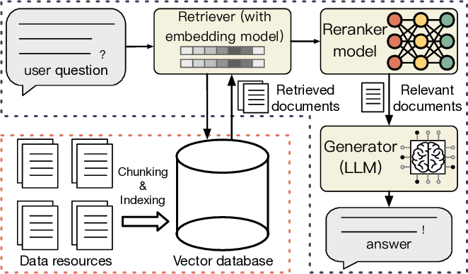

RAG
RAG (Retrieval-Augmented Generation, 检索增强生成) 是一种结合信息检索与文本生成的技术，旨在通过引入外部知识库来提升生成式模型准确性和可靠性。

RAG 完整工作流
1. 知识库向量化存储（预处理阶段）
● 目的：将外部知识库（如文档、网页、数据库）转换为可高效检索的向量形式。 ● 技术实现： a. 文本分块：将文档割为短段落或句子（如每段512个token） b. 向量编码：使用预训练模型将文本块编码为稠密向量，向量需捕捉语义相似性（如：“猫和犬科动物” 比 “猫和键盘”更接近）。 c. 向量存储：存入向量数据库，这类数据库支持快速邻近搜索。并建立索引以加速大规模检索。
2. 检索（Retrieval）
● 目的：根据用户输入的问题或提示（query），从外部知识库（如数据库，文档集合或互联网）中检索相关片段。 ● 技术实现： a. 将用户查询转换为向量表示，通过向量相似度（如余弦相似度）匹配最相关的文本片段。 b. 通常返回Top-K（如3-5条）最相关的文档或段落。
3. 增强（Augmentation）
● 目的：将检索到的信息与用户输入融合，作为生成模型的上下文。 ● 技术实现： a. 将检索到的文本片段与原始查询拼接，形成增强后的输入，例如： 1）【用户查询】“量子计算的主要挑战是什么？” 2）【检索到的文档1】“量子退相干是量子计算中的核心挑战…” 3) 【检索到的文档2】 “错误校正技术尚未成熟…” 4) 请你根据检索到的文档回答用户的问题 b. 部分高级方法会对检索结果进行重排序或过滤，剔除冗余或低质量内容。
4. 生成（Generation）
● 目的：基于增强后的上下文，生成更准确，事实性更强的回答。 ● 技术实现： a. 使用生成模型（如GPT、Kimi等）处理拼接后的输入，生成最终输出。 b. 模型在生成时会考虑原始问题和检索到的证据，避免纯生成模型的“幻觉”（编造事实）问题。
关键优势
● 动态知识更新：无需重新训练模型，通过更新检索库即可适应新知识。 ● 可解释性：生成结果可关联到检索到的具体文档，便于验证。 ● 事实性增强：减少模型对参数化知识的依赖，依赖外部权威数据源。
典型应用场景
● 开放域问答（如ChatGPT的联网搜索功能） ● 客服系统（结合企业知识库） ● 学术/医疗领域需高准确性回答的场景
相关内容
 支付宝
支付宝
 微信
微信